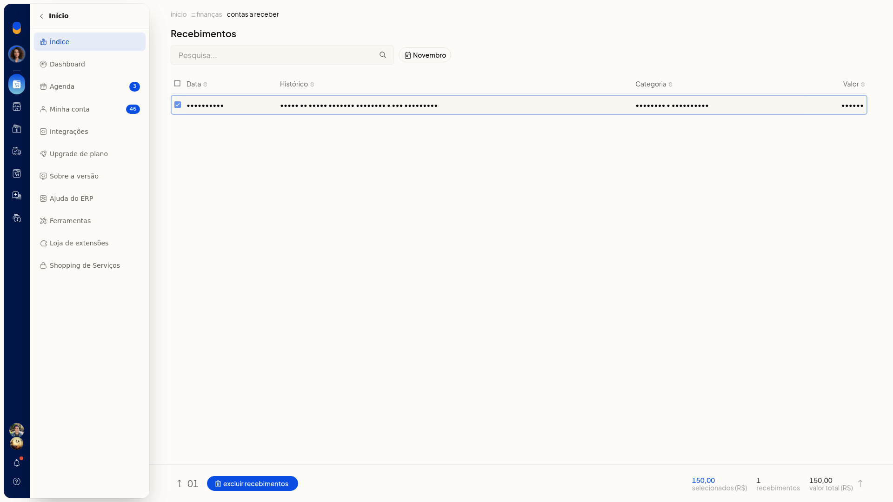

Contas a receber
No Caixa, a baixa de uma conta a receber aparece como um lançamento da conta financeira. Você reconhece esse lançamento pelo histórico de baixa de conta vencida e pelo vínculo de Origem. Não há coluna de Status nessa consulta nem na lista de Recebimentos aberta por esse vínculo.
Pela Origem, você abre o recebimento que gerou o lançamento. Nessa lista dá para imprimir um relatório ou exportar os registros para planilha. O lançamento de baixa não se corrige no Caixa: a edição fica desabilitada porque ele vem de um recebimento.
Importante
- A baixa já precisa existir como lançamento no Caixa. Nesta tela não há botão para dar baixa em conta a receber.
- Não há coluna nem ação de Status no lançamento de baixa nem em Recebimentos.
- Lançamento vindo de recebimento não pode ser alterado. A ficha informa: Edição desabilitada. Este lançamento não pode ser alterado pois vem de um recebimento ou pagamento.
- Para abrir o recebimento, use o controle de Origem do lançamento. Não use a trilha do topo da página como caminho.
Instruções
-
Acesse Finanças > Caixa.
-
Na conta financeira, localize o lançamento de baixa pelo histórico de baixa de conta vencida.
-
Abra o menu da linha do lançamento. As opções são Editar, Imprimir recibo, Alterar conta e Marcadores.

-
No mesmo lançamento, clique no controle de Origem, o ícone com a letra B.
-
Em Recebimentos, consulte o recebimento relacionado. As colunas são Data, Histórico, Categoria e Valor.
-
Clique em Mais ações para usar Imprimir relatório ou Exportar recebimentos para planilha.
-
Para ver a exclusão, marque a caixa de seleção do recebimento. A barra inferior mostra a quantidade selecionada e Excluir recebimentos. O rodapé mostra o valor selecionado, a quantidade de recebimentos e o valor total.

-
Para conferir a restrição, volte ao lançamento de baixa no Caixa, abra o menu da linha e clique em Editar.
-
Leia o aviso de edição desabilitada nas abas Dados do lançamento, Competência, Anexos e Marcadores e clique em Voltar para retornar à lista.

Resultado
O lançamento de baixa fica visível no Caixa, com histórico de baixa de conta vencida e controle de Origem. A Origem abre Recebimentos com o registro correspondente, sem coluna de Status. A edição do lançamento exibe a mensagem de edição desabilitada.
Informações adicionais
- O lançamento de baixa também oferece Imprimir recibo, Alterar conta e Marcadores no menu da linha.
- Em Recebimentos não há menu de ações na linha, apenas a caixa de seleção.
- Nessas listas de origem não há opção de importar planilha nem de ativar integração para consultar ou lançar a baixa.